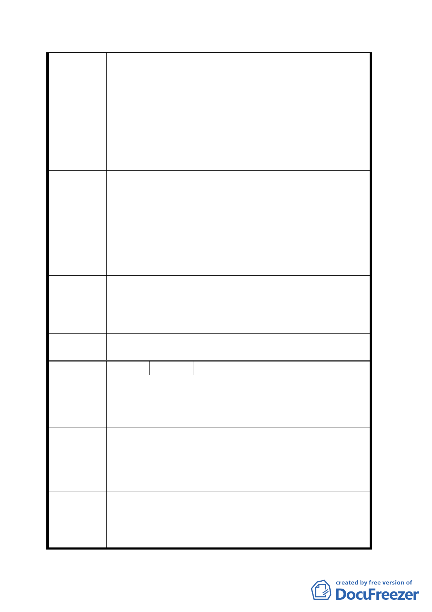

口所排出的氣體有很多是對人體有害的有毒氣體，如果將
通風口設置在目前預定地點，它的東、西、北側都是人口
密集的，甚至如北側饒河街到了晚上已經成為人潮聚集的
地方，因此通風口設置在此非常不宜。
２、目前捷運所有的通風口，譬如板南線在敦化南路、忠
孝東路口有兩個是放在綠帶口，淡水線雙連、中山站的通
風口也設在中間的綠帶，建議本案仿照捷運藍線、淡水線，
將此通風口予以調整到對面擁有空曠腹地、面對松山台鐵
那邊的土地上，讓污染的空氣得以疏解。
一、 現預訂於「交一」土地上之相關捷運設施，規劃設置
於現公有市場中。
二、 選定市場以東，與市場相連之土地予以變更。
建議辦法
三、 選定市場以西，與市場相連之土地予以變更。
四、 選定原東星大樓，現已為平地，無任何建物之土地予
以變更。
五、 選定市場斜對面之松山農會土地，予以變更。
六、 其他合理之變更方案。
專案小組審
查結論
本案專案小組原則接受捷運局所提「出入口移至台北新站
辦公大樓前人行道、通風口移至虎林街以西中央分隔島」
之替代方案續提委員會議（大會）審議。
委員會決議
本案原公展所擬變更第三種商業區土地為交通用地乙案，
依專案小組審查結論不予變更。
編 號 ２ 陳情人 李道益（交一）
本人堅決反對私有土地被徵收，因此地為全家生活之重
陳情理由
心，且政府於民國七十年左右共強制徵收土地二次共三十
七坪，當時所賠償之金額尚不足支付稅款，現今又以強制
徵收之手段。試想，若是您，您願望嗎？
請於公有地設置，既無徵收問題又可節省捷運預算開支，
建議辦法
本人建議下列地點：一、農會，於松山區農會設置，通風
出口恰於後方空地，較無污染問題。二、松山車站週邊公
有地。
專案小組審
查結論
同編號１。
委員會決議
本案原公展所擬變更第三種商業區土地為交通用地乙案，
依專案小組審查結論不予變更。
三七